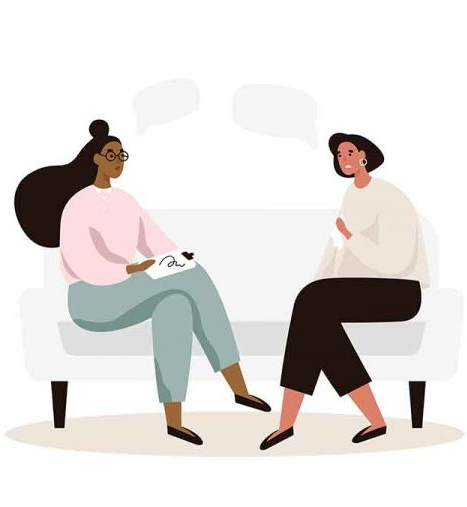

Terapia con niños y padres
Todos los niños-as comunican, y la mejor forma que tienen de comunicar es a través de sus conductas y sus impulsos.
Mas Información

Terapia con adultos
Trauma es toda experiencia que desde la percepción de uno mismo-a, se sintió como que la vida de uno-a corría peligro..
Mas InformaciónConsultoría Clínica
Es un espacio para profesionales que se están formando en juego terapia, en Synergetic Play Therapy (SPT) específicamente.
Mas InformaciónTerapia con adultos
Trauma es toda experiencia que desde la percepción de uno mismo-a, se sintió como que la vida de uno-a corría peligro. Muchas veces esta percepción de peligro puede haber sido real o imaginaria, no importa, para el cerebro no hay diferencia entre real o imaginario. Para el cerebro, lo que sucede en la mente es real y punto. Con esta idea de partida podemos decir que la mayoría de los seres humanos en algún punto de nuestro desarrollo evolutivo tuvimos algún trauma, ¿de acuerdo? A su vez, podemos decir que unos de los elementos mas importantes para definir trauma es la percepción individual de la experiencia. Por lo tanto, yo como terapeuta no puedo definir lo que es traumático o no, en un individuo. A su vez, cuando un individuo atraviesa un trauma, hay aspectos de esa experiencia que se bloquean en el cuerpo y quedan inconscientes, fuera del campo de consciencia del individuo.